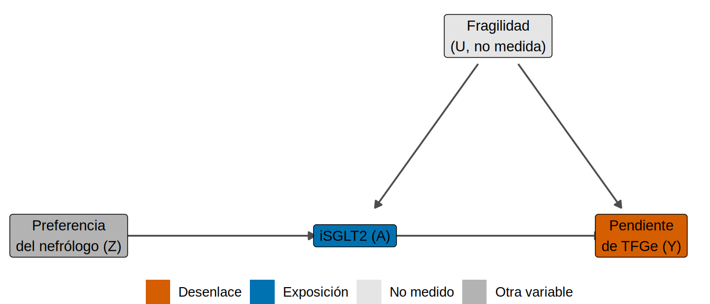
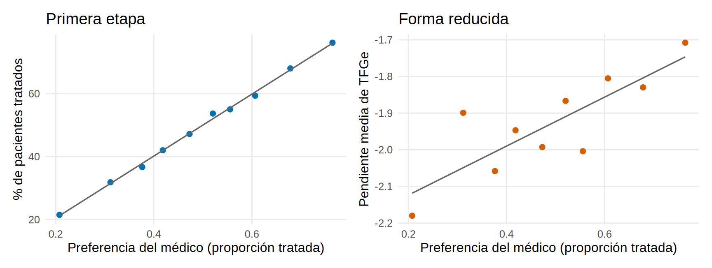
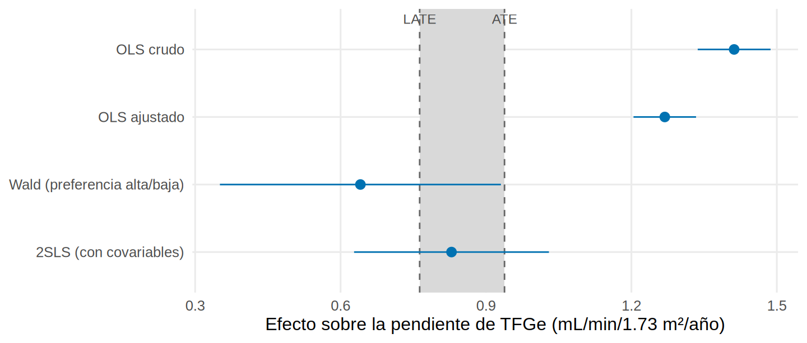
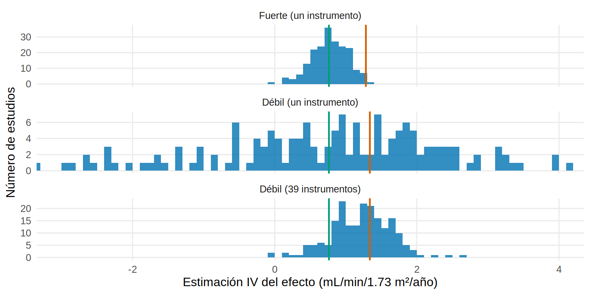

library(tidyverse)
library(AER) # ivreg()
library(sandwich) # errores estándar robustos / por grupos
library(lmtest)
library(patchwork)
source("R/funciones_epi.R") # dibujar_dag(), smd()
source("R/funciones_extra_a.R") # num(), pct()
source("R/simular_cap19_cuasi.R") # simular_iv()
source("R/funciones_cap19_cuasi.R") # dos_etapas(), mc_iv()
theme_set(theme_minimal(base_size = 12) + theme(panel.grid.minor = element_blank()))
# 6 000 pacientes con ERC y DM2, atendidos por 40 nefrólogos (DATOS SIMULADOS)
d <- simular_iv() |>
mutate(luacr = log(uacr), edad10 = edad / 10, hombre = as.numeric(sexo == "Hombre"),
pref_alta = as.integer(preferencia > median(preferencia))) # instrumento dicotomizado
covs <- "edad10 + hombre + hba1c + pas + tfg_basal + luacr + ecv" # confusores MEDIDOS
ate <- mean(d$ite) # verdad: efecto medio en todos
late <- mean(d$ite[d$tipo == "cumplidor"]) # verdad: efecto medio en los cumplidoresVariables instrumentales: la preferencia del nefrólogo
Nota🩺 Escenario
Quieres saber si el iSGLT2 enlentece la caída de la TFGe, pero sospechas que los pacientes más frágiles reciben menos el fármaco y evolucionan peor, y la fragilidad no está en tu base. Ajustar por lo medido no basta. Entonces notas algo: en tu hospital, unos nefrólogos recetan iSGLT2 a casi todo el mundo y otros a casi nadie, y el paciente no elige a su nefrólogo. La preferencia del médico empuja el tratamiento sin tocar la fragilidad del paciente. Ese empujón “casi aleatorio” es un instrumento.
Lo que vamos a hacer
- Entender la lógica de una variable instrumental (VI) y sus supuestos (relevancia, independencia, exclusión y monotonía).
- Estimar el efecto con el estimador de Wald y con mínimos cuadrados en dos etapas (a mano y con
AER::ivreg), y compararlo con la regresión ordinaria y con la verdad. - Ver qué efecto estima la VI (el de los “cumplidores”, no el ATE) y qué pasa con un instrumento débil.
Todos los datos son simulados (función simular_iv() en R/simular_cap19_cuasi.R): conocemos el efecto individual de cada paciente.
Paso 1. La idea: un empujón que no pasa por la fragilidad
Un instrumento \(Z\) es una variable que (1) empuja el tratamiento, (2) no comparte causas con el desenlace y (3) solo afecta al desenlace a través del tratamiento. Aquí, \(Z\) es la preferencia del nefrólogo: la proporción de los otros pacientes de ese médico que recibieron iSGLT2 (excluyendo al paciente en cuestión). Es una forma de medir “qué tan recetador es este médico” sin mirar al paciente.
nodos <- tribble(
~nombre, ~x, ~y, ~etiqueta, ~rol,
"Z", 0, 0, "Preferencia\ndel nefrólogo (Z)", "otro",
"A", 2, 0, "iSGLT2 (A)", "exposicion",
"Y", 4, 0, "Pendiente\nde TFGe (Y)", "desenlace",
"U", 3, 1, "Fragilidad\n(U, no medida)", "no medido")
aristas <- tribble(~de, ~a, "Z", "A", "A", "Y", "U", "A", "U", "Y")
dibujar_dag(nodos, aristas)
Qué vemos: la fragilidad \(U\) tuerce la comparación entre tratados y no tratados (camino \(A \leftarrow U \rightarrow Y\)). Pero \(Z\) solo entra por \(A\): si comparamos pacientes de médicos “recetadores” con pacientes de médicos “prudentes”, la diferencia de resultados solo puede deberse a que unos recibieron más el fármaco. La VI aprovecha solo esa parte de la variación del tratamiento.
Paso 2. Los supuestos (y cuáles se pueden mirar)
- Relevancia: \(Z\) cambia la probabilidad de recibir \(A\). Se puede comprobar (Paso 4).
- Independencia: \(Z\) no comparte causas con \(Y\) (el paciente no elige médico según su fragilidad). No se puede probar; se argumenta y se miran las covariables medidas.
- Exclusión: \(Z\) afecta a \(Y\) solo a través de \(A\). No se puede probar.
- Monotonía: ningún paciente haría lo contrario de lo que empuja el instrumento (un médico más recetador nunca quita el fármaco a quien otro le habría recetado). Es lo que permite interpretar el resultado (Paso 6).
Una comprobación parcial de la independencia: si \(Z\) se parece a una aleatorización, las covariables deberían estar equilibradas según \(Z\), aunque no lo estén según \(A\). Comparamos con la diferencia de medias estandarizada (DEM, Cap. 12) entre “preferencia alta” y “baja” y entre tratados y no tratados:
vars <- c("edad", "hombre", "hba1c", "pas", "tfg_basal", "luacr", "ecv", "fragilidad")
tab_bal <- tibble(variable = vars,
`Tratados vs no tratados` = map_dbl(vars, \(v) smd(d[[v]], d$isglt2)),
`Preferencia alta vs baja` = map_dbl(vars, \(v) smd(d[[v]], d$pref_alta)))
tab_bal |> mutate(across(where(is.numeric), \(v) round(v, 2)))# A tibble: 8 × 3
variable `Tratados vs no tratados` `Preferencia alta vs baja`
<chr> <dbl> <dbl>
1 edad -0.49 0.02
2 hombre 0.01 0.02
3 hba1c 0.22 0.04
4 pas -0.01 0.06
5 tfg_basal 0.37 0
6 luacr 0.33 0.02
7 ecv 0 0.02
8 fragilidad -0.64 -0.01Qué vemos: según el tratamiento, la DEM llega a 0.49 en las covariables medidas y a -0.64 en la fragilidad (que en la vida real no verías: aquí la vemos porque simulamos). Según la preferencia, la DEM máxima es solo 0.06, incluida la fragilidad. El instrumento reparte a los pacientes “como al azar”, al menos en lo que podemos ver.
Paso 3. Primero, la regresión ordinaria (el resultado “feo”)
crudo ajustado ATE_verdadero
1.41 1.27 0.94 Qué vemos: la diferencia cruda es 1.41 y la regresión ajustada por lo medido da 1.27, bastante por encima del ATE verdadero (0.94 mL/min/1.73 m²/año). Es el sesgo de la fragilidad no medida: los frágiles reciben menos fármaco y evolucionan peor, así que el fármaco parece mejor de lo que es.
Paso 4. Relevancia: la primera etapa
La primera etapa es la regresión del tratamiento sobre el instrumento (y las covariables). El estadístico F de ese instrumento mide su fuerza; una regla clásica pide \(F > 10\) (Staiger y Stock, 1997).
etapa1 <- lm(as.formula(paste("isglt2 ~ preferencia +", covs)), data = d)
etapa1_sin <- lm(as.formula(paste("isglt2 ~", covs)), data = d)
F_etapa1 <- anova(etapa1_sin, etapa1)$F[2]
c(coef_preferencia = coef(etapa1)[["preferencia"]], F = F_etapa1) |> round(1)coef_preferencia F
0.9 725.0 Qué vemos: por cada 10 puntos porcentuales más de preferencia del médico, la probabilidad de recibir el fármaco sube 9.5 puntos, con un F de 725. Instrumento fuerte. Lo dibujamos por deciles de preferencia; el panel derecho es la forma reducida (el efecto de \(Z\) sobre \(Y\)):
por_decil <- d |> mutate(decil = ntile(preferencia, 10)) |>
group_by(decil) |> summarise(pref = mean(preferencia), tratados = mean(isglt2), pendiente = mean(pendiente_tfg))
p1 <- ggplot(por_decil, aes(pref, 100 * tratados)) + geom_point(colour = "#0072B2", size = 2) +
geom_smooth(method = "lm", se = FALSE, colour = "grey40", linewidth = 0.6) +
labs(x = "Preferencia del médico (proporción tratada)", y = "% de pacientes tratados", title = "Primera etapa")
p2 <- ggplot(por_decil, aes(pref, pendiente)) + geom_point(colour = "#D55E00", size = 2) +
geom_smooth(method = "lm", se = FALSE, colour = "grey40", linewidth = 0.6) +
labs(x = "Preferencia del médico (proporción tratada)", y = "Pendiente media de TFGe", title = "Forma reducida")
p1 + p2
La pendiente de la forma reducida dividida entre la de la primera etapa es, precisamente, el estimador de VI.
Paso 5. El estimador de Wald: un cociente
Con un instrumento binario (preferencia alta o baja, partida en la mediana) el estimador es un cociente: el efecto de \(Z\) sobre \(Y\) entre el efecto de \(Z\) sobre \(A\).
\[ \hat\beta_{Wald} = \frac{E[Y \mid Z=1] - E[Y \mid Z=0]}{E[A \mid Z=1] - E[A \mid Z=0]} \]
m <- d |> group_by(pref_alta) |> summarise(y = mean(pendiente_tfg), a = mean(isglt2))
dif_y <- m$y[2] - m$y[1]; dif_a <- m$a[2] - m$a[1]
wald <- dif_y / dif_a
iv_wald <- ivreg(pendiente_tfg ~ isglt2 | pref_alta, data = d) # mismo cociente, con IC
c(dif_y = dif_y, dif_a = dif_a, wald = wald, ivreg = coef(iv_wald)[["isglt2"]]) |> round(3)dif_y dif_a wald ivreg
0.172 0.268 0.641 0.641 Qué vemos: pasar de médicos “prudentes” a “recetadores” mejora la pendiente media 0.17 mL/min/1.73 m²/año y aumenta la proporción de tratados en 26.8 puntos. El cociente es 0.64 (IC 95 %: 0.35 a 0.93), idéntico al que da ivreg(). Ojo con el denominador: la ganancia de 0.17 se atribuye solo a esos 26.8 puntos de pacientes cuyo tratamiento cambió; dividir por una fracción pequeña “estira” el resultado y su incertidumbre, y por eso el IC es ancho.
Paso 6. Mínimos cuadrados en dos etapas
Con un instrumento continuo y covariables se usa mínimos cuadrados en dos etapas (two-stage least squares, 2SLS): (1) predecir el tratamiento con el instrumento y las covariables; (2) regresar el desenlace sobre el tratamiento predicho. Hecho a mano:
d$a_hat <- fitted(etapa1) # etapa 1: A predicho por Z y covariables
etapa2 <- lm(as.formula(paste("pendiente_tfg ~ a_hat +", covs)), data = d) # etapa 2: Y sobre A predichoY con AER::ivreg(), cuya fórmula tiene dos partes separadas por |: a la izquierda, el modelo del desenlace; a la derecha, los instrumentos más las covariables:
f_iv <- as.formula(paste("pendiente_tfg ~ isglt2 +", covs, "| preferencia +", covs))
iv <- ivreg(f_iv, data = d)
res_iv <- summary(iv, diagnostics = TRUE)
tibble(método = c("2SLS a mano (etapa 2)", "ivreg"),
estimado = c(coef(etapa2)[["a_hat"]], coef(iv)[["isglt2"]]),
ee = c(summary(etapa2)$coef["a_hat", 2], res_iv$coef["isglt2", 2])) |>
mutate(across(where(is.numeric), \(v) round(v, 3)))# A tibble: 2 × 3
método estimado ee
<chr> <dbl> <dbl>
1 2SLS a mano (etapa 2) 0.829 0.111
2 ivreg 0.829 0.102Qué vemos: los coeficientes son iguales (0.83), pero el error estándar “a mano” (0.111) no es el correcto (0.102 con ivreg): la segunda etapa ignora que a_hat es una estimación. Usa siempre ivreg() (o su equivalente) para la inferencia. Como los pacientes de un mismo médico comparten la preferencia, conviene además un error estándar agrupado por médico:
statistic p-value
Weak instruments 725.021 0
Wu-Hausman 21.707 0Con errores agrupados por médico, el error estándar es 0.103 (IC 95 %: 0.63 a 1.03), casi igual. La tabla de diagnóstico repite el F de la primera etapa (725) y añade la prueba de Wu-Hausman (p = 3.2e-06), que contrasta si OLS e IV difieren: aquí sí, lo que concuerda con la confusión por fragilidad.
Paso 7. ¿Qué efecto estima? El de los cumplidores (LATE)
La VI no estima el ATE. Estima el efecto promedio local (LATE, local average treatment effect): el efecto en los pacientes cuyo tratamiento cambia con el instrumento, los cumplidores (Angrist, Imbens y Rubin, 1996). Con monotonía hay tres tipos de paciente:
- Siempre tratados: reciben el fármaco con cualquier médico.
- Nunca tratados: no lo reciben con ningún médico.
- Cumplidores: lo reciben con un médico recetador y no con uno prudente.
En la vida real no sabes quién es quién. En la simulación sí (columna tipo del oráculo):
# A tibble: 3 × 5
tipo n porcentaje uacr_mediana efecto_medio
<chr> <dbl> <dbl> <dbl> <dbl>
1 cumplidor 1627 27.1 88 0.76
2 nunca 2242 37.4 106 0.87
3 siempre 2131 35.5 175 1.14Qué vemos: los cumplidores son el 27 % de los pacientes, y no son un grupo cualquiera: son los de albuminuria más baja (UACR mediana 88 frente a 175 en los siempre tratados), la “zona gris” donde el médico decide. Como el beneficio crece con la albuminuria, su efecto medio (el LATE verdadero, 0.76) es menor que el de todos (el ATE, 0.94). El 2SLS apunta al LATE, no al ATE.
Juntamos todo:
fila <- function(nombre, m) tibble(metodo = nombre, est = coef(m)[["isglt2"]],
inf = confint(m)["isglt2", 1], sup = confint(m)["isglt2", 2])
comp <- bind_rows(fila("OLS crudo", ols_crudo), fila("OLS ajustado", ols_aj),
fila("Wald (preferencia alta/baja)", iv_wald),
tibble(metodo = "2SLS (con covariables)", est = coef(iv)[["isglt2"]], inf = ic_iv[1], sup = ic_iv[2])) |>
mutate(metodo = factor(metodo, levels = rev(metodo)))
ggplot(comp, aes(est, metodo)) +
annotate("rect", xmin = late, xmax = ate, ymin = -Inf, ymax = Inf, fill = "grey85") +
geom_vline(xintercept = c(late, ate), colour = "grey40", linetype = "dashed") +
geom_pointrange(aes(xmin = inf, xmax = sup), colour = "#0072B2") +
annotate("text", x = c(late, ate), y = 4.45, label = c("LATE", "ATE"), size = 3.2, colour = "grey30") +
labs(x = "Efecto sobre la pendiente de TFGe (mL/min/1.73 m²/año)", y = NULL)
Qué vemos: ambos OLS quedan lejos y por encima de la verdad, con intervalos estrechos que no lo advierten. El Wald (0.64) y el 2SLS (0.83) quedan cerca del LATE (0.76) y sus intervalos lo contienen, pero son tan anchos que tampoco permiten distinguir el LATE del ATE. Pagas precisión para ganar validez: el error estándar del 2SLS es 3.1 veces el del OLS ajustado.
Paso 8. Instrumento débil: cuando el empujón es suave
Si la preferencia casi no cambia el tratamiento, el denominador del cociente es casi cero y el estimador se vuelve errático. Simulamos 200 estudios de 1 500 pacientes en tres escenarios: un instrumento fuerte, uno débil, y el caso de muchos instrumentos débiles (una indicadora por médico, 39 instrumentos).
mc <- bind_rows(
mc_iv(200, n = 1500, sd_pref = 0.60, semilla = 1) |> mutate(escenario = "Fuerte (un instrumento)"),
mc_iv(200, n = 1500, sd_pref = 0.15, semilla = 3) |> mutate(escenario = "Débil (un instrumento)"),
mc_iv(200, n = 1500, sd_pref = 0.15, instrumento = "medico", semilla = 3) |> mutate(escenario = "Débil (39 instrumentos)"))
mc <- mc |> mutate(escenario = factor(escenario, levels = c("Fuerte (un instrumento)", "Débil (un instrumento)", "Débil (39 instrumentos)")))
resumen_mc <- mc |> group_by(escenario) |>
summarise(F_mediana = median(F), IV_mediana = median(iv), IV_q25 = quantile(iv, 0.25), IV_q75 = quantile(iv, 0.75),
pct_fuera = 100 * mean(iv < -3 | iv > 4), OLS_media = mean(ols))
resumen_mc |> mutate(across(where(is.numeric), \(v) round(v, 2)))# A tibble: 3 × 7
escenario F_mediana IV_mediana IV_q25 IV_q75 pct_fuera OLS_media
<fct> <dbl> <dbl> <dbl> <dbl> <dbl> <dbl>
1 Fuerte (un instrumento) 122. 0.77 0.61 0.96 0 1.28
2 Débil (un instrumento) 1.65 1.02 -0.29 2.34 24 1.34
3 Débil (39 instrumentos) 1.23 1.24 0.92 1.49 0 1.34ggplot(mc, aes(iv)) +
geom_histogram(binwidth = 0.1, fill = "#0072B2", alpha = 0.8, boundary = 0) +
geom_vline(xintercept = late, colour = "#009E73", linewidth = 0.8) +
geom_vline(data = resumen_mc, aes(xintercept = OLS_media), colour = "#D55E00", linewidth = 0.8) +
facet_wrap(~escenario, ncol = 1, scales = "free_y") +
coord_cartesian(xlim = c(-3, 4)) +
labs(x = "Estimación IV del efecto (mL/min/1.73 m²/año)", y = "Número de estudios")
Qué vemos:
- Fuerte (F mediano 122): los 200 estudios se agrupan alrededor del LATE (mediana 0.77, rango intercuartílico 0.61 a 0.96).
- Débil, un instrumento (F mediano 1.7): el estimador es casi impredecible: la mitad central va de -0.29 a 2.34 y el 24 % de los estudios cae fuera del gráfico. Un solo estudio podría “demostrar” cualquier cosa.
- Débil, muchos instrumentos (F mediano 1.2): parece más estable (mitad central de 0.92 a 1.49), pero su mediana (1.24) se arrima al OLS sesgado (1.34). Es el sesgo hacia OLS de los instrumentos débiles: precisión aparente, sesgo real.
Advertencia⚠️ Las dos hipótesis que no se pueden comprobar
El F de la primera etapa solo prueba la relevancia. La exclusión puede fallar sin que lo veas: si los nefrólogos que recetan más iSGLT2 también controlan mejor la presión arterial o prescriben más bloqueadores del sistema renina-angiotensina, la preferencia afecta a la TFGe por otras vías y la VI queda sesgada, a veces más que el OLS. Tampoco asegures la independencia por equilibrar lo medido: si los pacientes frágiles se derivan a ciertos médicos o centros, la fragilidad ya no se reparte “al azar”. Defiende el instrumento con argumentos clínicos, no solo con un F alto.
Importante🎯 En resumen
- Un instrumento empuja el tratamiento, no comparte causas con el desenlace y actúa solo a través del tratamiento. Su ventaja: funciona con confusión no medida.
- Comprueba la relevancia (F de la primera etapa; aquí 725) y mira el equilibrio de lo medido, sabiendo que independencia y exclusión no se prueban.
- Wald (instrumento binario) y 2SLS (con
ivreg()) dan 0.64 y 0.83, frente a 1.27 del OLS ajustado (verdad: ATE 0.94, LATE 0.76). - La VI estima el LATE (el efecto en los cumplidores), que puede diferir del ATE: aquí los cumplidores tienen menos albuminuria y menos beneficio.
- Los instrumentos débiles dan estimaciones erráticas o sesgadas hacia el OLS; el IC ancho es el precio de la validez, no un defecto del método.
Ejercicio
- En el Paso 5 parte la preferencia en terciles (compara el tercil alto con el bajo, descartando el medio). ¿Cambia el Wald? ¿Y su IC?
- Cambia
simular_iv(sd_pref = 0.3)(instrumento más débil) y repite los Pasos 4 y 6. ¿Qué pasa con el F y con el IC del 2SLS? - Piensa en tu hospital: ¿qué otros instrumentos “casi aleatorios” podrían usarse para el tratamiento (distancia al centro, guardia de fin de semana, cambio de guía)? Para cada uno, ¿qué argumento clínico podría romper la exclusión?
Referencias
- Angrist JD, Imbens GW, Rubin DB. Identification of causal effects using instrumental variables. J Am Stat Assoc. 1996;91(434):444-455.
- Baiocchi M, Cheng J, Small DS. Instrumental variable methods for causal inference. Stat Med. 2014;33(13):2297-2340.
- Staiger D, Stock JH. Instrumental variables regression with weak instruments. Econometrica. 1997;65(3):557-586.
- Hernán MA, Robins JM. Causal Inference: What If. Chapman & Hall/CRC; 2020 (cap. 16: variables instrumentales).
- Barrett M, D’Agostino McGowan L, Gerke T. Causal Inference in R. https://www.r-causal.org/ (lectura recomendada por el autor).